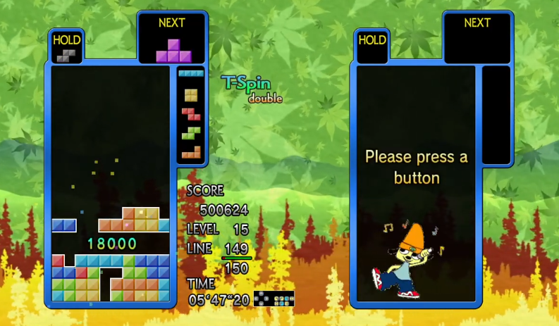
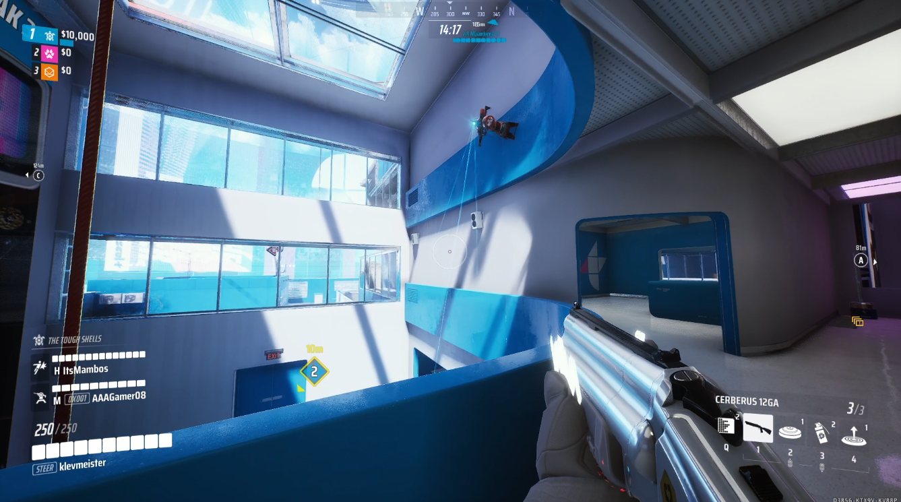
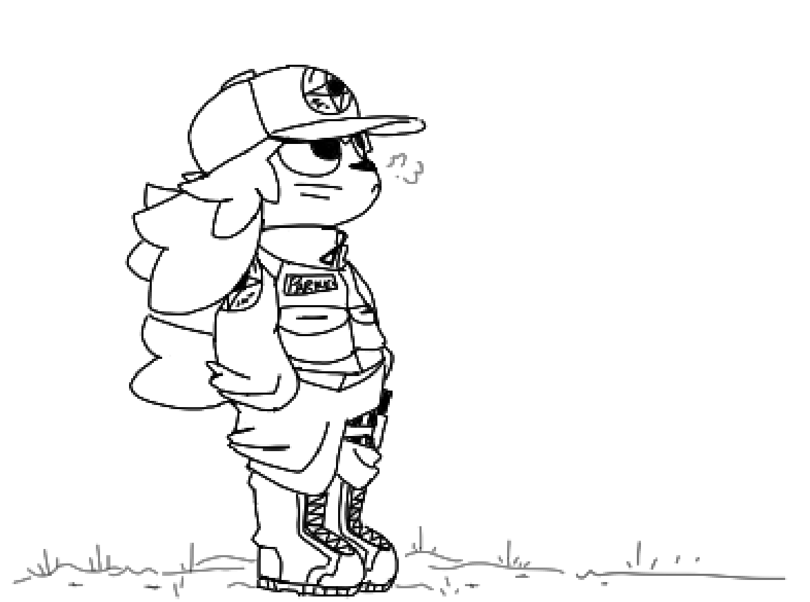
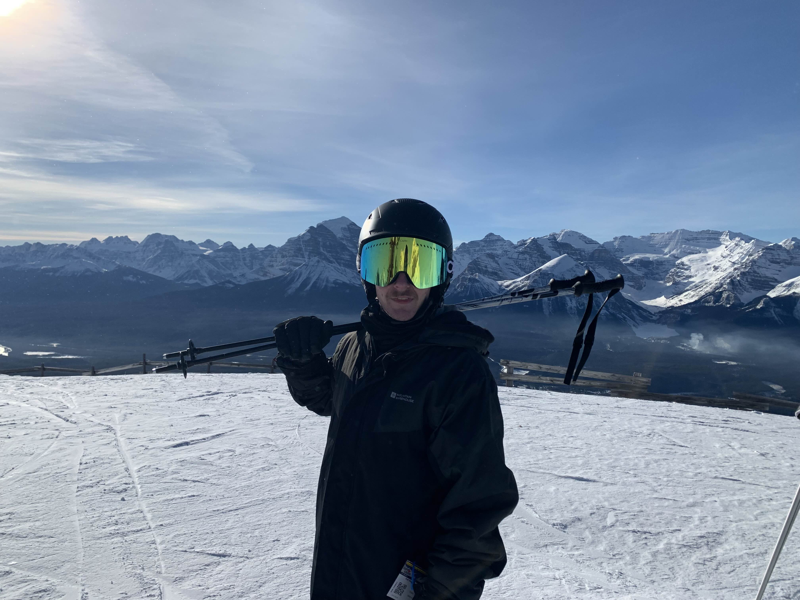

HOBBIES
Coding
I'm always working on new coding projects and exersizes! Consistent practice in between large products, internships and semesters are key to maintaining and building on your coding skills. I am currently working on an unannounced modded map for the Black Ops 3 Zombies Steam Workshop.

TETRIS
I am a mid to high level Tetris player with a qualified grade of m1 in Tetris: The Grand Master 3 ~TERROR-INSTINCT~ and I am currently ranked top 500 in Canada on TETR.IO's TETRA LEAGUE.

FPS Games
In my spare time I often play through a rotating library of shooter games. I've been currently binging the Call of Duty Zombies modes, THE FINALS, and Counter-Strike 2.

Drawing
I often like to sketch and draw during my free time. I've been lately developing a character based on the Project Janus faction from Black Ops 6 Zombies. You might see me sneaking him into projects as an easter egg...

Skiing
During the winter I love to go skiing at several mountain resorts in Banff. My favourite resorts are Sunshine Village and Lake Louise. I'm still getting used to the slopes... the greens in Alberta would be classified as quadruple diamonds in my hometown of Whitby!
Camping
During the summer I often go camping at the national parks surrounding Banff. While I am there I take part in many activities such as kayaking, hiking and (most importantly) relaxing all day long.